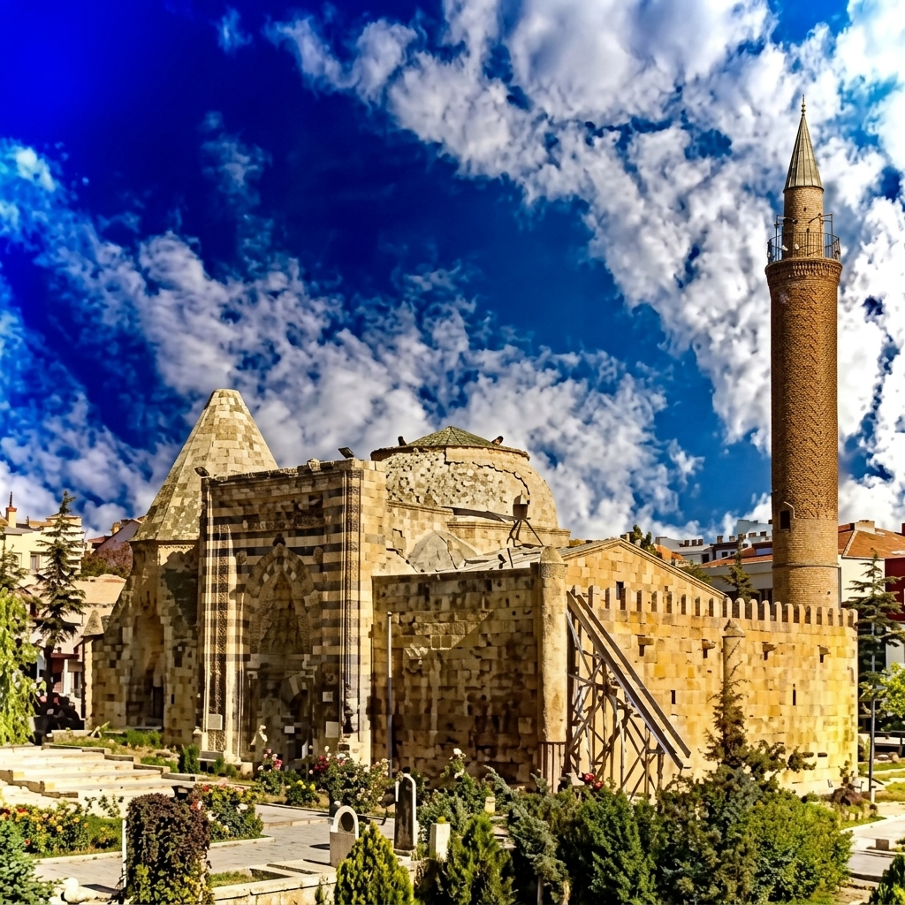

Anadolu'nun kadim şehirlerinden Kırşehir, yalnızca coğrafi güzellikleriyle değil, bünyesinde barındırdığı manevi mirasla da asırlardır insanları kendine çekmektedir. Kırşehir'de meftun olan zatlar, Selçuklu ve Osmanlı dönemlerinden bugüne kadar uzanan derin bir irfan geleneğinin temsilcileridir. Bu topraklarda yatan alimler, mutasavvıflar ve ahilik önderleri; yalnızca dönemlerinin değil, günümüzün de manevi pusulası olmaya devam etmektedir.
Kaman ilçesinde eğitim gören Kaman öğrencileri için rehber niteliğindeki bu yazı, yaklaşık 45 dakikalık bir yolculukla ulaşılan Kırşehir merkezindeki türbeleri ve inanç turizmi rotalarını tanıtmayı amaçlamaktadır. Ahi Evran Üniversitesi bünyesinde öğrenim gören her öğrenci, bu kadim şehrin manevi değerlerini yakından tanıma fırsatına sahiptir.
Ahi Evran — Ahilik Teşkilatının Kurucusu
Ahi Evran (1171–1262), Anadolu'da esnaf ve zanaatkârların örgütlenmesini sağlayan Ahilik Teşkilatı'nın kurucusudur. Horasan'dan Anadolu'ya gelen Ahi Evran, Kırşehir'i merkez edinerek ticaret ahlakı, iş disiplini ve kardeşlik ilkelerini toplumun her kesimine yaymıştır. Bugün Kırşehir türbeleri arasında en çok ziyaret edilen yapı olan Ahi Evran Türbesi, Ahilik kültürünün canlı bir sembolüdür.
Ahi Evran'ın öğretileri yalnızca tarihsel bir miras değil, aynı zamanda günümüz iş dünyası ve girişimcilik ekosistemi için de ilham kaynağıdır. Yönetim Bilişim Sistemleri gibi modern disiplinlerde eğitim alan öğrenciler, Ahilik'in kalite odaklı üretim ve etik ticaret anlayışını günümüze taşıyabilir.
Cacabey — Bilim ve Astronomi Öncüsü

Cacabey (Nureddin Cibril bin Cacabey), 13. yüzyılda Kırşehir'de bilim ve eğitim alanında öncü bir isimdir. 1272 yılında inşa ettirdiği Cacabey Medresesi (bugünkü Cacabey Camii), aynı zamanda Anadolu'nun bilinen ilk gözlemevi özelliğini taşımaktadır. Minaresinin eğik yapısı, astronomik gözlem amacıyla tasarlandığına dair güçlü kanıtlar sunmaktadır.
Cacabey'in bilime verdiği önem, Kırşehir inanç turizmi rotasının yalnızca manevi değil, aynı zamanda entelektüel bir derinlik taşıdığını göstermektedir. Kültür Portalı'ndaki Cacabey Camii sayfası, yapı hakkında daha ayrıntılı bilgi sunmaktadır.
Aşık Paşa — Türkçenin Manevi Mimarı
Aşık Paşa (1272–1332), Türk edebiyatının ve tasavvuf geleneğinin en önemli isimlerinden biridir. En bilinen eseri Garibname, yaklaşık 12.000 beyitten oluşan ve Türkçe yazılmış ilk büyük mesnevilerden biridir. Aşık Paşa, eserlerini bilinçli olarak Türkçe kaleme alarak halkın diline ve kültürüne sahip çıkmıştır.
Kırşehir'deki Aşık Paşa Türbesi, Selçuklu taş işçiliğinin en güzel örneklerinden birini sergilemektedir. Türbe, geometrik desenleri ve kitabeleriyle mimari açıdan da büyük değer taşımaktadır.
Süleyman Türkmani — Gönül Erlerinin Öncüsü
Süleyman Türkmani, 13. yüzyılda Kırşehir'de yaşamış önemli bir mutasavvıf ve gönül eridir. Ahilik geleneğinin manevi temellerini oluşturan isimlerden biri olarak kabul edilmektedir. Türbesi, Kırşehir'in manevi atmosferini tamamlayan önemli bir ziyaret noktasıdır.
Kırşehir Türbeleri Ziyaret Rehberi
Kaman öğrencileri için Kırşehir'deki türbe ve tarihi mekanları ziyaret etmek hem kolay hem de son derece zenginleştirici bir deneyimdir. İşte ziyaretinizi planlarken dikkat etmeniz gerekenler:
- Ahi Evran Türbesi: Kırşehir merkez, Ahi Evran Mahallesi. Her gün ziyarete açıktır.
- Cacabey Camii: Kırşehir merkez, Cacabey Mahallesi. Namaz vakitleri dışında geziye uygundur.
- Aşık Paşa Türbesi: Kırşehir merkez, Aşıkpaşa Mahallesi. Selçuklu mimarisinin eşsiz örneklerini barındırır.
- Süleyman Türkmani Türbesi: Kırşehir merkez. Huzurlu atmosferiyle bilinir.
- Ulaşım: Kaman'dan Kırşehir merkeze düzenli dolmuş seferleri bulunmaktadır (~45 dakika).
Kırşehir İnanç Turizmi ve Kaman Bağlantısı
Kırşehir inanç turizmi, yılda on binlerce ziyaretçiyi ağırlayan güçlü bir potansiyele sahiptir. Kaman Uygulamalı Bilimler Yüksekokulu ve Kaman Meslek Yüksekokulu (MYO) öğrencileri, Kırşehir'in bu eşsiz manevi mirasını keşfetme ayrıcalığına sahiptir. Hafta sonları veya ders aralarında yapılacak kısa bir gezi, hem kültürel farkındalığı artıracak hem de öğrencilik yıllarına unutulmaz anılar katacaktır.
Kırşehir'de meftun olan zatlar, yalnızca birer tarihi figür değil; dürüstlük, çalışkanlık, bilim sevgisi ve insan sevgisi gibi evrensel değerlerin taşıyıcılarıdır. Bu değerleri tanımak ve yaşatmak, Kaman'da eğitim gören her öğrencinin hem akademik hem de kişisel gelişimine önemli katkılar sunacaktır.